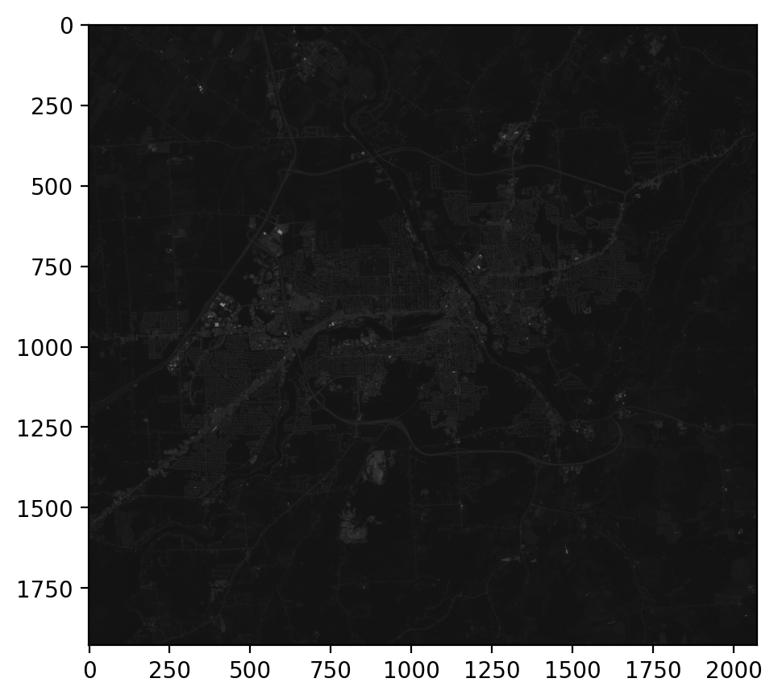
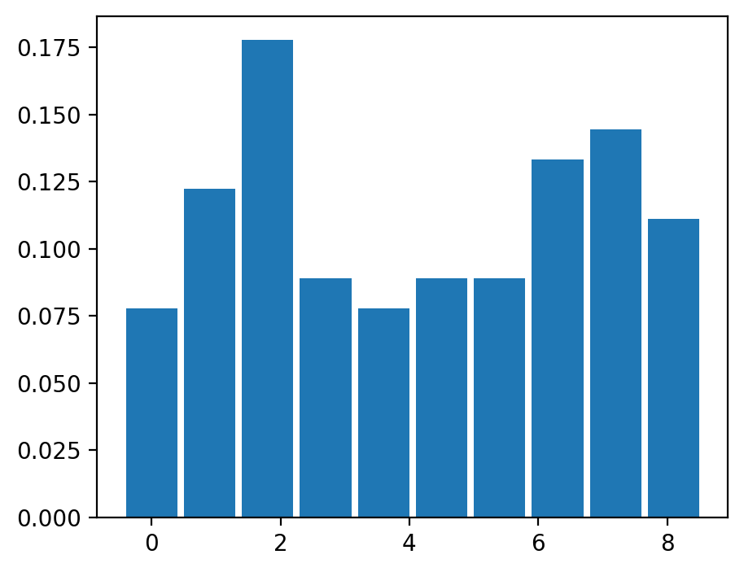
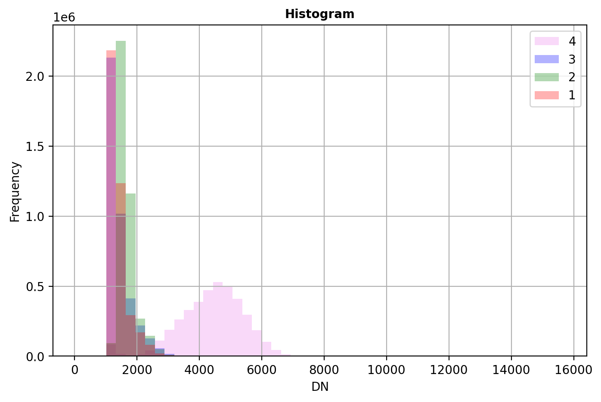
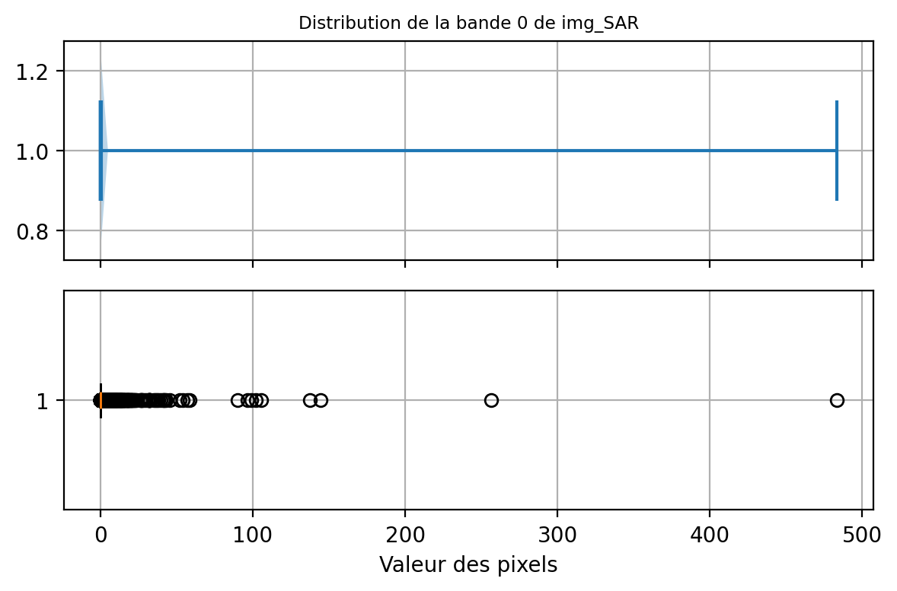
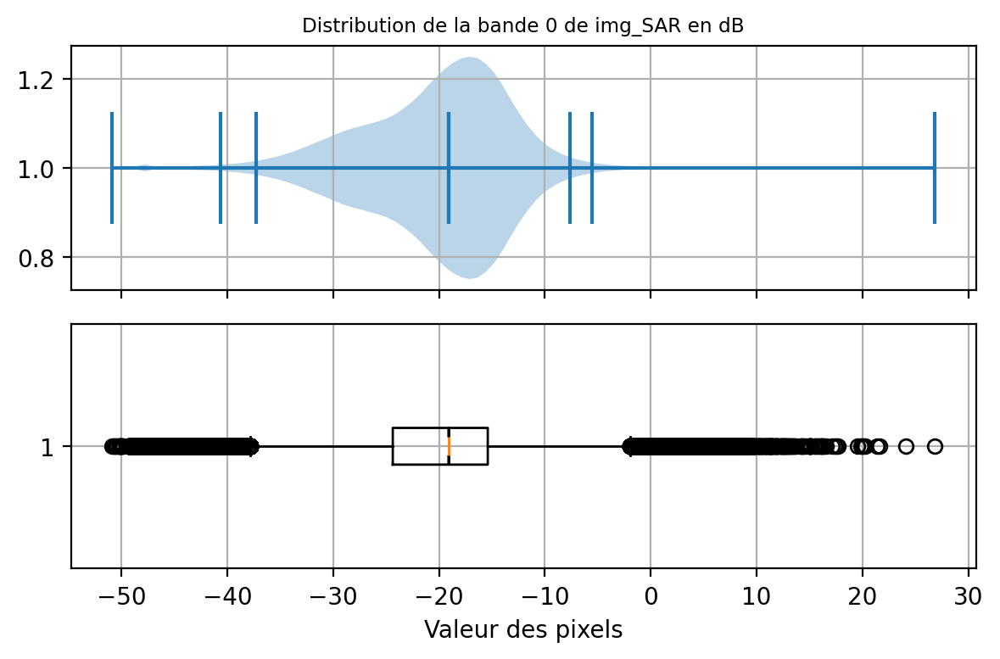
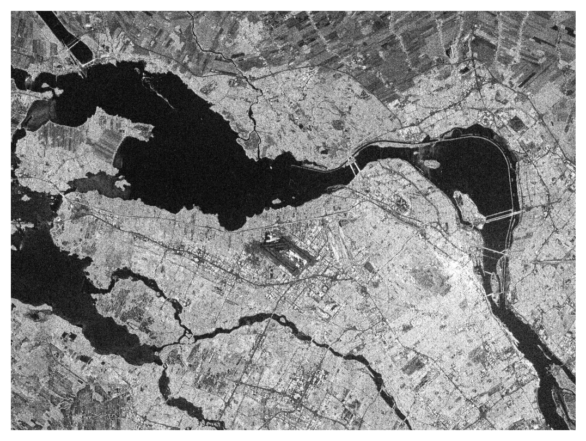
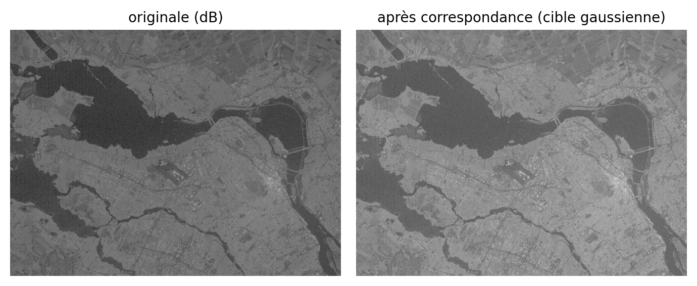
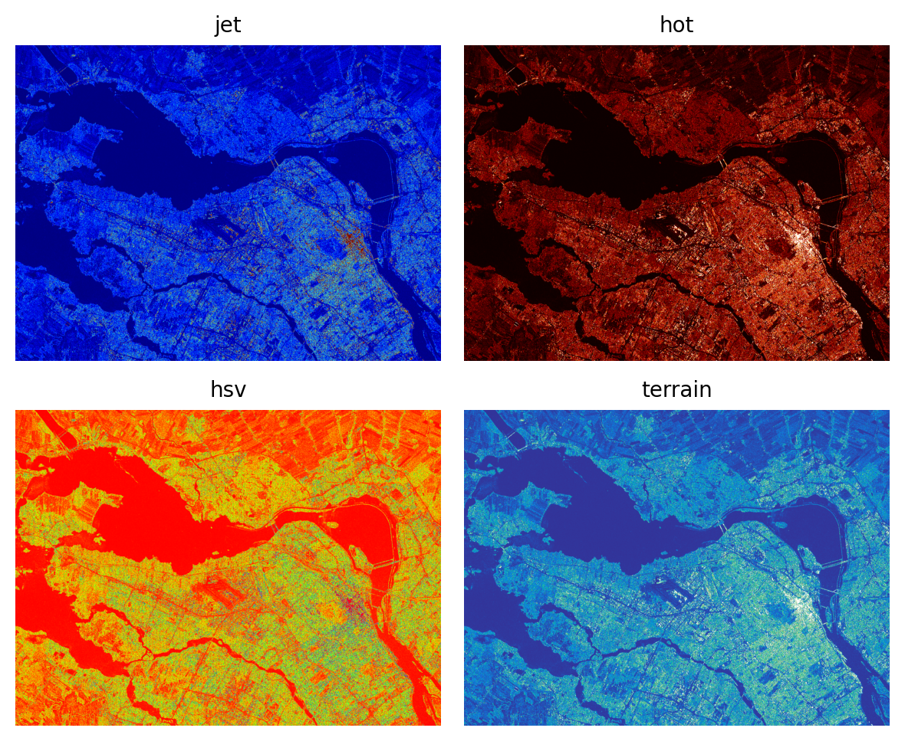
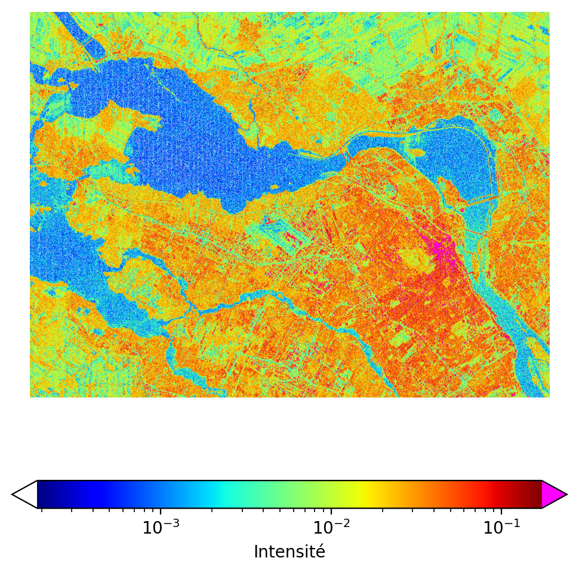

%%capture --no-stderr
!apt-get update
!apt-get install gdal-bin libgdal-dev3 Réhaussement et visualisation d’images
Première édition · Version 1.367
Assurez-vous de lire ce préambule avant d’exécutez le reste du notebook.
3.1 Préambule
3.1.1 Objectifs
Dans ce chapitre, nous abordons quelques techniques de réhaussement et de visualisation d’images. Ce chapitre est aussi disponible sous la forme d’un notebook Python:

Objectifs d’apprentissage visés dans ce chapitre
À la fin de ce chapitre, vous devriez être en mesure de :
- exploiter les statistiques d’une image pour améliorer la visualisation;
- calculer les histogrammes de valeurs;
- appliquer une transformation linéaire ou non linéaire pour améliorer une visualisation;
- comprendre le principe des composés colorés;
- explorer une image sur une carte web interactive (
leafmap);
3.1.2
3.1.3 Bibliothèques
Les bibliothèques qui vont être explorées dans ce chapitre sont les suivantes:
Dans l’environnement Google Colab, seul rioxarray et GDAL doivent être installés:
Dans l’environnement Google Colab, il convient de s’assurer que les librairies sont installées:
%%capture --no-stderr
!pip install -qU matplotlib rioxarray xrscipy scikit-image leafmap localtileserverVérifier les importations:
import numpy as np
import rioxarray as rxr
from scipy import signal
import xarray as xr
import xrscipy
import matplotlib.pyplot as plt3.1.4 Données
Nous utiliserons les images suivantes dans ce chapitre:
%%capture --no-stderr
import gdown
gdown.download('https://drive.google.com/uc?export=download&confirm=pbef&id=1a6Ypg0g1Oy4AJt9XWKWfnR12NW1XhNg_', output= 'RGBNIR_of_S2A.tif')
gdown.download('https://drive.google.com/uc?export=download&confirm=pbef&id=1a6O3L_abOfU7h94K22At8qtBuLMGErwo', output= 'sentinel2.tif')
gdown.download('https://drive.google.com/uc?export=download&confirm=pbef&id=1_zwCLN-x7XJcNHJCH6Z8upEdUXtVtvs1', output= 'berkeley.jpg')
gdown.download('https://drive.google.com/uc?export=download&confirm=pbef&id=1dM6IVqjba6GHwTLmI7CpX8GP2z5txUq6', output= 'SAR.tif')
gdown.download('https://drive.google.com/uc?export=download&confirm=pbef&id=1a4PQ68Ru8zBphbQ22j0sgJ4D2quw-Wo6', output= 'landsat7.tif')Vérifiez que vous êtes capable de les lire :
with rxr.open_rasterio('berkeley.jpg', mask_and_scale= True) as img_rgb:
print(img_rgb)
with rxr.open_rasterio('sentinel2.tif', mask_and_scale= True) as img_s2:
print(img_s2)
with rxr.open_rasterio('RGBNIR_of_S2A.tif', mask_and_scale= True) as img_rgbnir:
print(img_rgbnir)
with rxr.open_rasterio('SAR.tif', mask_and_scale= True) as img_SAR:
print(img_SAR)3.2 Visualisation en Python
D’emblée, il faut mentionner que Python n’est pas vraiment fait pour visualiser de la donnée de grande taille, le niveau d’interactivité est aussi assez limité. Pour une visualisation interactives, il est plutôt conseillé d’utiliser un outil comme QGIS. Néanmoins, il est possible de visualiser de petites images avec la librairie matplotlib qui est la librairie principale de visualisation en Python. Cette librairie est extrêmement riche et versatile, nous ne présenterons que les bases nécessaires pour démarrer. Le lecteur désirant aller plus loin pourra consulter les nombreux tutoriels disponibles comme celui-ci.
La fonction de base pour créer une figure est subplots, la largeur et la hauteur en pouces de la figure peuvent être contrôlées via le paramètre figsize:
import matplotlib.pyplot as plt
fig, ax= plt.subplots(figsize=(5, 4))
plt.show()
Pour l’affichage des images, la fonction imshow permet d’afficher une matrice 2D à une dimension en format float ou une matrice RVB avec 3 bandes. Il est important que les dimensions de la matrice soient dans l’ordre hauteur, largeur et bande.
import matplotlib.pyplot as plt
fig, ax= plt.subplots(figsize=(6, 5))
plt.imshow(img_rgbnir[0].data)
plt.show()
Pour un affichage à trois bandes, les valeurs seront ramenées sur une échelle de 0 à 1, il est donc nécessaire de normaliser les valeurs avant l’affichage:
import matplotlib.pyplot as plt
fig, ax= plt.subplots(figsize=(6, 5))
# ordre des bandes B,V,R,PIR -> on réordonne en R,V,B pour un affichage en vraies couleurs
plt.imshow(img_rgbnir.sel(band=[3,2,1]).data.transpose(1,2,0)/2500.0)
plt.show()
On remarquera les valeurs des axes x et y avec une origine en haut à gauche. Ceci est un référentiel purement matriciel (lignes et colonnes); autrement dit, il n’y a pas ici de géoréférence. Pour pallier à cette limitation, les librairies rasterio et xarray proposent une extension de la fonction imshow permettant d’afficher les coordonnées cartographiques ainsi qu’un contrôle la dynamique de l’image:
import rioxarray as rxr
fig, ax= plt.subplots(figsize=(6, 5))
img_rgbnir.sel(band=[3,2,1]).plot.imshow(vmin=86, vmax=5000) # R,V,B (ordre stocké B,V,R,PIR)
ax.set_title('Imshow avec rioxarray')
plt.show()
3.2.1 Visualisation sur le Web
Les affichages matplotlib précédents sont statiques. Pour explorer une image de manière interactive — zoomer, se déplacer, superposer un fond de carte, comparer deux visualisations — on peut la placer sur une carte web. La librairie leafmap offre une interface Python unifiée au-dessus de folium et ipyleaflet et permet, en quelques lignes, d’afficher un GeoTIFF géoréférencé sur une carte glissante (slippy map).
Cartes interactives et formats de sortie
Les cartes leafmap sont des composants JavaScript : elles ne s’affichent que dans la version HTML de ce livre ou dans un notebook (Google Colab, Jupyter), jamais dans le PDF. Le calque raster local étant servi à la volée par un serveur de tuiles temporaire, ouvrez ce chapitre dans pour l’explorer pleinement.
On crée une carte, puis on ajoute directement notre image locale. Comme les bandes sont stockées dans l’ordre B, V, R, PIR, on demande les indices [3, 2, 1] pour un composé vraie couleur :
import leafmap
m = leafmap.Map()
m.add_raster('RGBNIR_of_S2A.tif', indexes=[3, 2, 1], layer_name='Vraie couleur')
mLa méthode split_map crée un comparateur à volet glissant, idéal pour opposer deux visualisations de la même scène — ici la vraie couleur ([3, 2, 1]) et l’infrarouge fausses couleurs ([4, 3, 2]), qui fait ressortir la végétation en rouge :
m = leafmap.Map()
m.split_map(
left_layer='RGBNIR_of_S2A.tif',
right_layer='RGBNIR_of_S2A.tif',
left_args={'indexes': [3, 2, 1]},
right_args={'indexes': [4, 3, 2]},
left_label='Vraie couleur', right_label='Infrarouge',
)
mleafmap permet aussi d’ajouter un fond satellite (m.add_basemap('Esri.WorldImagery')), de charger des images distantes au format Cloud Optimized GeoTIFF (m.add_cog_layer(url)), ou d’inspecter les valeurs de pixels au clic (m.add('inspector')). C’est un outil précieux pour situer une image ou un résultat de traitement (comme une classification, Chapitre 6) dans son contexte géographique.
3.3 Réhaussements visuels
Le réhaussement visuel d’une image vise principalement à améliorer la qualité visuelle d’une image en améliorant le contraste, la dynamique ou la texture d’une image. De manière générale, ce réhaussement ne modifie pas la donnée d’origine mais il est appliquée dynamiquement à l’affichage pour des fins d’inspection visuelle. Le réhaussement nécessite généralement une connaissance des caractéristiques statistiques d’une image. Ces statistiques sont ensuite exploitées pour appliquer diverses transformations linéaires ou non linéaires.
3.3.1 Statistiques d’une image
On peut considérer un ensemble de statistique pour chacune des bandes d’une image:
valeurs minimales et maximales
valeurs moyennes,
Quartiles (1er quartile, médiane et 3ième quartile), quantiles et percentiles.
écart-type, et coefficients d’asymétrie (skewness) et d’applatissement (kurtosis)
Ces statistiques doivent être calculées pour chaque bande d’une image multispectrale.
En ligne de commande, gdalinfo permet d’interroger rapidement un fichier image pour connaitre ces statistiques univariées de base:
!gdalinfo -stats landsat7.tif/usr/bin/sh: 1: gdalinfo: not foundLes librairies de base comme rasterio et xarray produisent facilement un sommaire des statistiques de base avec la fonction stats:
import rasterio as rio
import numpy as np
with rio.open('landsat7.tif') as src:
stats= src.stats()
print(stats)La librairie xarray donne accès à des fonctionnalités plus sophistiquées comme le calcul des quantiles:
import rioxarray as riox
with riox.open_rasterio('landsat7.tif', masked= True) as src:
print(src)
quantiles = src.quantile(dim=['x','y'], q=[.025,.25,.5,.75,.975])
quantiles<xarray.DataArray (band: 3, y: 1917, x: 2181)> Size: 50MB
[12542931 values with dtype=float32]
Coordinates:
* band (band) int64 24B 1 2 3
* x (x) float64 17kB -1.365e+07 -1.365e+07 ... -1.359e+07
* y (y) float64 15kB 4.576e+06 4.576e+06 ... 4.519e+06 4.519e+06
spatial_ref int64 8B 0
Attributes:
TIFFTAG_XRESOLUTION: 1
TIFFTAG_YRESOLUTION: 1
TIFFTAG_RESOLUTIONUNIT: 1 (unitless)
OVR_RESAMPLING_ALG: NEAREST
AREA_OR_POINT: Area
scale_factor: 1.0
add_offset: 0.0<xarray.DataArray (quantile: 5, band: 3)> Size: 120B
array([[ 54., 19., 19.],
[ 85., 38., 27.],
[ 99., 54., 38.],
[111., 69., 57.],
[140., 102., 89.]])
Coordinates:
* band (band) int64 24B 1 2 3
* quantile (quantile) float64 40B 0.025 0.25 0.5 0.75 0.9753.3.1.1 Calcul de l’histogramme
Le calcul d’un histogramme pour une image (une bande) permet d’avoir une vue plus détaillée de la répartition des valeurs radiométriques. Le calcul d’un histogramme nécessite minimalement de faire le choix du nombre de barre ( bins ou de la largeur ). Un bin est un intervalle de valeurs pour lequel on peut calculer le nombre de valeurs observées dans l’image. La fonction de base pour ce type de calcul est la fonction numpy.histogram():
import numpy as np
array = np.random.randint(0,10,100) # 100 valeurs aléatoires entre 0 et 10
hist, bin_limites = np.histogram(array, density=True)
print('valeurs :',hist)
print('limites :',bin_limites)valeurs : [0.07777778 0.12222222 0.17777778 0.08888889 0.07777778 0.08888889
0.08888889 0.13333333 0.14444444 0.11111111]
limites : [0. 0.9 1.8 2.7 3.6 4.5 5.4 6.3 7.2 8.1 9. ]Le calcul se fait avec 10 intervalles par défaut.
fig, ax= plt.subplots(figsize=(5, 4))
plt.bar(bin_limites[:-1],hist)
plt.show()
Pour des besoins de visualisation, le calcul des valeurs extrêmes de l’histogramme peut aussi se faire via les quantiles comme discutés auparavant.
3.3.1.1.1 Visualisation des histogrammes
La librarie rasterio est probablement l’outil le plus simples pour visualiser rapidement des histogrammes sur une image multi-spectrale:
import rasterio as rio
from rasterio.plot import show_hist
with rio.open('RGBNIR_of_S2A.tif') as src:
show_hist(src, bins=50, lw=0.0, stacked=False, alpha=0.3,histtype='stepfilled', title="Histogram")
3.3.2 Réhaussements linéaires
Le réhaussement linéaire (linear stretch) d’une image est la forme la plus simple de réhaussement, elle consiste à 1) optimiser les valeurs des pixels d’une image afin de maximiser la dynamique disponibles à l’affichage, ou 2) à changer le format de stockage des valeurs (de 8 bits à 16 bits):
\[ \text{nouvelle valeur d'un pixel} = \frac{\text{valeur d'un pixel} - min_0}{max_0 - min_0}\times (max_1 - min_1)+min_1 \tag{3.1}\]
Par cette opération, on passe de la dynamique de départ (\(max_0 - min_0\)) vers la dynamique cible (\(max_1 - min_1\)). Bien que cette opération semble triviale, il est important d’être conscient des trois contraintes suivantes:
- Faire attention à la dynamique cible, ainsi, pour sauvegarder une image en format 8 bit, on utilisera alors \(max_1=255\) et \(min_1=0\).
2. Préservation de la valeur de no data : il faut faire attention à la valeur \(min_1\) dans le cas d’une valeur présente pour no_data. Par exemple, si no_data=0 alors il faut s’assurer que \(min_1>0\).
3. Précision du calcul : si possible réaliser la division ci-dessus en format float
3.3.2.1 Cas des histogrammes asymétriques
Dans certains cas, la distribution de valeurs est très asymétrique et présente une longue queue avec des valeurs extrêmes élevées (à droite ou à gauche de l’histogramme). Le cas des images SAR est particulièrement représentatif de ce type de données. En effet, celles-ci peuvent présenter une distribution de valeurs de type exponentiel. Il est alors préférable d’utiliser des percentiles au préalable afin d’explorer la forme de l’histogramme et la distribution des valeurs:
NO_DATA_FLOAT= -999.0
# on prend tous les pixels de la première bande
values = img_SAR[0].values.flatten().astype(float)
# on exclut les valeurs invalides
values = values[~np.isnan(values)]
# on exclut le no data
values = values[values!=NO_DATA_FLOAT]
# calcul des percentiles
percentiles_position= (0,0.1,1,2,50,98,99,99.9,100)
percentiles= dict(zip(percentiles_position, np.percentile(values, percentiles_position)))
print(percentiles){0: np.float64(8.172580237442162e-06), 0.1: np.float64(1.588739885482937e-05), 1: np.float64(8.657756850880105e-05), 2: np.float64(0.00018846066552214325), 50: np.float64(0.012372820172458887), 98: np.float64(0.1719470709562302), 99: np.float64(0.27963151514529694), 99.9: np.float64(1.5235805057287233), 100: np.float64(483.223876953125)}On constate que la valeur médiane (0.012) est très faible, ce qui signifie que 50% des valeurs sont inférieures à cette valeur alors que la valeur maximale (483) est 10 000 fois plus élevée! Une manière de visualiser cette distribution de valeurs est d’utiliser boxplot et violinplot de la librairie matplotlib:
fig, ax = plt.subplots(nrows=2, ncols=1, figsize=(6, 4), sharex=True)
ax[0].set_title('Distribution de la bande 0 de img_SAR', fontsize='small')
ax[0].grid(True)
ax[0].violinplot(values, orientation ='horizontal',
quantiles =(0.01,0.02,0.50,0.98,0.99),
showmeans=False,
showmedians=True)
ax[1].set_xlabel('Valeur des pixels')
ax[1].grid(True)
bplot = ax[1].boxplot(values, notch = True, orientation ='horizontal')
plt.tight_layout()
plt.show()
Afin de visualiser correctement l’histogramme, il faut se limiter à un intervalle de valeurs plus réduit. Dans le code ci-dessous, on impose à la fonction np.histogramme de compter les valeurs de pixels dans des intervalles de valeurs fixés par la fonction np.linspace(percentiles[0.1],percentiles[99.9], 50) où percentiles[0.1] et percentiles[99.9] sont les \(0.1\%\) et \(99.9\%\) percentiles respectivement:
hist, bin_edges = np.histogram(values,
bins=np.linspace(percentiles[0.1],
percentiles[99.9], 50),
density=True)
fig, ax = plt.subplots(nrows=2,ncols=1,figsize=(6, 5), sharex=True)
ax[0].bar(bin_edges[:-1],
hist*(bin_edges[1]-bin_edges[0]),
width= (bin_edges[1]-bin_edges[0]),
edgecolor= 'w')
ax[0].set_title("Distribution de probabilité (PDF)")
ax[0].set_ylabel("Densité de probabilité")
ax[0].grid(True)
ax[1].plot(bin_edges[:-1],
hist.cumsum()*(bin_edges[1]-bin_edges[0]))
ax[1].set_title("Distribution de probabilité cumulée (CDF)")
ax[1].set_xlabel("Valeur du pixel")
ax[1].set_ylabel("Probabilité cumulée")
ax[1].grid(True)
plt.tight_layout()
plt.show() 
Au niveau de l’affichage avec matplotlib, la dynamique peut être contrôlée directement avec les paramètres vmin et vmax comme ceci:
fig, ax = plt.subplots(nrows=2, ncols=2, figsize=(6, 5), sharex=True, sharey=True)
[a.axis('off') for a in ax.flatten()]
ax[0,0].imshow(img_SAR[0].values, vmin=percentiles[0], vmax=percentiles[100])
ax[0,0].set_title(f"0% - 100%={percentiles[0]:2.1f} - {percentiles[100]:2.1f}")
ax[0,1].imshow(img_SAR[0].values, vmin=percentiles[0.1], vmax=percentiles[99.9])
ax[0,1].set_title(f"0.1% - 99.9%={percentiles[0.1]:2.1f} - {percentiles[99.9]:2.1f}")
ax[1,0].imshow(img_SAR[0].values, vmin=percentiles[1], vmax=percentiles[99])
ax[1,0].set_title(f"1% - 99%={percentiles[1]:2.1f} - {percentiles[99]:2.1f}")
ax[1,1].imshow(img_SAR[0].values, vmin=percentiles[2], vmax=percentiles[98])
ax[1,1].set_title(f"2% - 98%={percentiles[2]:2.1f} - {percentiles[98]:2.1f}")
plt.tight_layout()
3.3.3 Réhaussements non linéaires
3.3.3.1 Réhaussement par fonctions
Le réhaussenent par fonction consiste à appliquer une fonction non linéaire afin de modifier la dynamique de l’image. Par exemple, pour une image radar, une transformation populaire est d’afficher les valeurs de rétrodiffusion en décibel (dB) avec la fonction log10().
percentiles_position= (0,0.1,1,2,50,98,99,99.9,100)
sar= img_SAR[0].data
# on masque le no_data et les valeurs <= 0 (impropres au log) : sinon 10*log10 -> -inf/nan
valid= (sar != NO_DATA_FLOAT) & (sar > 0)
values= 10*np.log10(np.where(valid, sar, np.nan)) # image en dB, nan hors du masque
percentiles_db= dict(zip(percentiles_position, np.nanpercentile(values, percentiles_position)))
print(percentiles_db){0: np.float64(-50.876407623291016), 0.1: np.float64(-47.98946910476685), 1: np.float64(-40.62594409942627), 2: np.float64(-37.24779266357422), 50: np.float64(-19.075312614440918), 98: np.float64(-7.6460519409179675), 99: np.float64(-5.534138813018874), 99.9: np.float64(1.8286541197300006), 100: np.float64(26.84148406982422)}Les boites à moustache (boxplots) ont une bien meilleure distribution qui est en effet très proche d’une distribution normale gaussienne:

On obtient ainsi les images suivantes:

3.3.3.2 Réhaussement gamma (loi de puissance)
Une autre famille de réhaussements non linéaires très utilisée est la correction gamma (ou loi de puissance), qui applique un exposant \(\gamma\) aux valeurs normalisées de l’image (Jensen 2016; Richards, Richards et al. 2022):
\[ j = \left(\frac{i}{i_{max}}\right)^{\gamma} \times j_{max} \tag{3.2}\]
Un \(\gamma < 1\) éclaircit les tons foncés (utile pour une image sous-exposée) alors qu’un \(\gamma > 1\) assombrit les tons clairs (utile pour une image surexposée); \(\gamma = 1\) correspond à l’identité. Contrairement à l’étirement linéaire, cette transformation n’est pas symétrique entre les ombres et les hautes lumières:
gammas = (0.5, 1.0, 2.0)
img_norm = np.clip(img_rgb.data.transpose(1, 2, 0) / 255.0, 0, 1)
fig, ax = plt.subplots(ncols=3, figsize=(9, 3))
for a, g in zip(ax, gammas):
a.imshow(img_norm ** g)
a.set_title(f"$\\gamma$={g}")
a.axis('off')
plt.tight_layout()
plt.show()
3.3.3.3 Égalisation d’histogramme
L’égalisation d’histogramme consiste à modifier les valeurs des pixels d’une image source afin que la distribution cumulée des valeurs (CDF) devienne similaire à celle d’une image cible. La CDF (Cumulative Distribution Function) est simplement la somme cumulée des valeurs de l’histogramme:
\[ CDF_{source}(i)= \frac{1}{K}\sum_{j=0}^{j \leq i} hist_{source}(j) \] avec \(K\) choisit de façon à ce que la dernière valeur soit égale à 1 (\(CDF_{source}(i_{max})=1\)). De la même manière, \(CDF_{cible}\) est la CDF d’une image cible. La formule générale pour l’égalisation d’histogramme est la suivante: \[ j = CDF_{cible}^{-1}(CDF_{source}(i)) \]
On peut choisir \(CDF_{cible}\) comme correspondant à une image où chaque valeur de pixel est équiprobable (d’où le terme égalisation), ce qui veut dire \(hist_{cible}(j)=1/L\) avec \(L\) égale au nombre de valeurs possibles dans l’image (par exemple \(L=256\)). \[ j = L \times CDF_{source}(i) \] On peut appliquer cette procédure sur l’image SAR en dB de la façon suivante:
sar= img_SAR[0].data
# masque : no_data et valeurs <= 0 exclues avant le passage en dB
valid= (sar != NO_DATA_FLOAT) & (sar > 0)
sar_db= 10*np.log10(np.where(valid, sar, np.nan)) # image en dB (nan hors masque)
values= np.sort(sar_db[valid].flatten()) # valeurs valides rangées par ordre croissant
cdf_x= np.linspace(values[0], values[-1], 1000) # 1000 valeurs réparties également sur l'intervalle des valeurs
cdf_source= np.interp(cdf_x, values, np.arange(len(values))/len(values)*255) # calcul de la CDF source
# on applique sur la MÊME échelle (dB) que celle utilisée pour construire la CDF
values_eq= np.interp(sar_db, cdf_x, cdf_source)
values_eq= np.where(valid, values_eq, 0).astype('uint8') # no_data remis à 0
plt.imshow(values_eq)
plt.axis('off')
3.3.3.4 Égalisation adaptative (CLAHE)
L’égalisation globale calcule une seule CDF pour toute l’image, ce qui peut mal fonctionner lorsque le contraste varie localement (zones d’ombre et de forte lumière dans une même scène). L’égalisation adaptative à contraste limité (Contrast Limited Adaptive Histogram Equalization, CLAHE) découpe l’image en tuiles et égalise l’histogramme de chacune séparément, avec un plafond (clip_limit) qui évite d’amplifier le bruit dans les zones homogènes (Jensen 2016). La librairie scikit-image en fournit une implémentation directe:
from skimage import exposure
gray = img_rgb.data.transpose(1, 2, 0).mean(axis=2) / 255.0
img_global = exposure.equalize_hist(gray)
img_clahe = exposure.equalize_adapthist(gray, clip_limit=0.03)
fig, ax = plt.subplots(ncols=3, figsize=(9, 3))
for a, im, title in zip(ax, (gray, img_global, img_clahe),
('originale', 'égalisation globale', 'CLAHE')):
a.imshow(im, vmin=0, vmax=1)
a.set_title(title)
a.axis('off')
plt.tight_layout()
plt.show()
La CLAHE fait ressortir davantage de détails locaux (textures, zones d’ombre) sans saturer les zones déjà bien contrastées, contrairement à l’égalisation globale.
3.3.3.5 Correspondance d’histogrammes
L’égalisation d’histogramme est en fait un cas particulier d’un problème plus général: faire correspondre la CDF d’une image source à une CDF cible arbitraire, et non uniquement à une distribution uniforme. Cette technique, la correspondance d’histogrammes (histogram matching), est notamment utile pour harmoniser la dynamique entre deux acquisitions, par exemple deux scènes adjacentes à mosaïquer (Richards, Richards et al. 2022; Schowengerdt 2007). La fonction match_histograms de scikit-image implémente directement \(j = CDF_{cible}^{-1}(CDF_{source}(i))\) pour une CDF cible quelconque, ici une distribution gaussienne:
from skimage.exposure import match_histograms
source = np.log10(img_SAR[0].data)
cible = np.random.normal(loc=source.mean(), scale=source.std(), size=source.shape)
source_matched = match_histograms(source, cible)
fig, ax = plt.subplots(ncols=2, figsize=(7, 3.5))
ax[0].imshow(source)
ax[0].set_title("originale (dB)")
ax[1].imshow(source_matched)
ax[1].set_title("après correspondance (cible gaussienne)")
[a.axis('off') for a in ax]
plt.tight_layout()
plt.show()
3.3.3.6 Palettes de couleur
Les palettes de couleurs sont appliquées dynamiquement à l’affichage sur une image à une seule bande. La librairie matplotlib contient un nombre considérable de palettes.
from matplotlib import colormaps
list(colormaps)Voici quelques exemples ci-dessous, les valeurs de l’image doivent être normalisées entre 0 et 1 ou entre 0 et 255 sinon les paramètres vmin et vmax doivent être spécifiés. On peut observer comment ces palettes révèlent les détails de l’image malgré une image originalement très sombre.
fig, ax = plt.subplots(nrows=2, ncols=2, figsize=(6, 5), sharex=True, sharey=True)
[a.axis('off') for a in ax.flatten()]
ax[0,0].imshow(img_SAR[0].data, vmin=percentiles[2], vmax=percentiles[98], cmap='jet')
ax[0,0].set_title(f"jet")
ax[0,1].imshow(img_SAR[0].data, vmin=percentiles[2], vmax=percentiles[98], cmap='hot')
ax[0,1].set_title(f"hot")
ax[1,0].imshow(img_SAR[0].data, vmin=percentiles[2], vmax=percentiles[98], cmap='hsv')
ax[1,0].set_title(f"hsv")
ax[1,1].imshow(img_SAR[0].data, vmin=percentiles[2], vmax=percentiles[98], cmap='terrain')
ax[1,1].set_title(f"terrain")
plt.tight_layout()
Il peut être utile d’ajouter une barre de couleurs afin d’indiquer la correspondance entre les couleurs et les valeurs numériques:
import matplotlib as mpl
fig, ax = plt.subplots(figsize=(6, 6))
cmap= mpl.colormaps.get_cmap('jet').with_extremes(under='white', over='magenta')
h=plt.imshow(img_SAR[0].data, norm=mpl.colors.LogNorm(vmin=percentiles[2], vmax=percentiles[98]),
cmap=cmap)
fig.colorbar(h, ax=ax, orientation='horizontal', label="Intensité", extend='both')
ax.axis('off') 
3.3.4 Composés colorés
Le système visuel humain est sensible seulement à la partie visible du spectre électromagnétique qui compose les couleurs de l’arc-en-ciel du bleu au rouge. L’ensemble des couleurs du spectre visible peut être obtenu à partir du mélange de trois couleurs primaires (rouge, vert et bleu). Ce système de décomposition à trois couleurs est à la base de la plupart des systèmes de visualisation ou de représentation de l’information de couleur. Si on prend le cas des images Sentinel-2, 12 bandes sont disponibles, plusieurs composés couleurs sont donc possibles (voir le site de Copernicus). Voici quelques exemples possibles, chaque composé mettant en valeur des propriétés différentes de la surface.
import rioxarray as rxr
fig, ax= plt.subplots(nrows=2, ncols= 2, figsize=(8, 6), sharex=True, sharey=True)
img_s2.sel(band=[4,3,2]).plot.imshow(vmin=86, vmax=4000, ax=ax[0,0])
ax[0,0].set_title('RVB')
img_s2.sel(band=[8,3,2]).plot.imshow(vmin=86, vmax=4000, ax=ax[0,1])
ax[0,1].set_title('NIR,V,B')
img_s2.sel(band=[12,8,4]).plot.imshow(vmin=86, vmax=4000, ax=ax[1,0])
ax[1,0].set_title('SWIR2,NIR,R')
img_s2.sel(band=[12,11,4]).plot.imshow(vmin=86, vmax=4000, ax=ax[1,1])
ax[1,1].set_title('SWIR2,SWIR1,NIR')
plt.tight_layout()
plt.show()
3.3.4.1 Étirement par décorrélation
Les bandes d’une image multispectrale sont souvent fortement corrélées entre elles, ce qui donne des composés couleurs peu contrastés (dominante grisâtre). L’étirement par décorrélation (decorrelation stretch) corrige ce problème en décorrélant les bandes dans l’espace des composantes principales, en égalisant leur variance, puis en revenant dans l’espace original (Schowengerdt 2007; Richards, Richards et al. 2022):
def decorrelation_stretch(img):
# img: (bandes, y, x)
X = img.reshape(img.shape[0], -1).astype(float)
X -= X.mean(axis=1, keepdims=True)
valeurs, vecteurs = np.linalg.eigh(np.cov(X))
X_pca = (vecteurs.T @ X) / np.sqrt(valeurs)[:, None]
X_stretch = vecteurs @ X_pca
q= np.quantile(X_stretch, [0.01, 0.02, 0.98, 0.99])
print(q)
X_stretch -= q[1]
X_stretch /= (q[2]-q[1])
return X_stretch.clip(0,1).reshape(img.shape)
composite = img_s2.sel(band=[4, 3, 2]).data
composite_stretch = decorrelation_stretch(composite)
fig, ax = plt.subplots(ncols=2, figsize=(8, 4))
ax[0].imshow(np.clip(composite.transpose(1, 2, 0) / 4000.0, 0, 1))
ax[0].set_title("composé RVB original")
ax[1].imshow(composite_stretch.transpose(1, 2, 0))
ax[1].set_title("après étirement par décorrélation")
[a.axis('off') for a in ax]
plt.tight_layout()
plt.show()[-2.41371207 -1.56805265 2.45923163 3.09766704]
Le résultat conserve les teintes relatives entre bandes tout en maximisant le contraste de chacune des composantes principales, ce qui fait ressortir davantage de détails que le composé original.
3.4 Points clés
À retenir
- Le réhaussement visuel améliore l’affichage (contraste, dynamique) sans modifier la donnée d’origine : il est appliqué dynamiquement à l’affichage.
- Les statistiques d’une image (min/max, moyenne, quantiles, écart-type) guident le choix de la transformation.
- Le stretch linéaire remappe la dynamique ; pour les histogrammes asymétriques (images SAR), les percentiles (p. ex. 2 %–98 %) fournissent des bornes d’affichage robustes.
- Les transformations non linéaires — passage en dB (
10·log10) et égalisation d’histogramme — rétablissent une distribution exploitable. - Les palettes de couleur et les composés colorés (choix des bandes) révèlent des propriétés différentes de la surface ;
vmin/vmaxcontrôlent la dynamique affichée. - Pour une exploration interactive (zoom, fond de carte, comparaison avant/après avec
split_map),leafmapsuperpose une image géoréférencée sur une carte web — dans un notebook ou la version HTML, jamais dans le PDF.
3.5 Exercices
À vous de jouer
Proposez une autre transformation non linéaire pour l’image SAR (p. ex. la racine carrée ou
np.arcsinh) et comparez son histogramme à celui obtenu en décibels.À l’aide de
skimage.exposure.match_histograms, faites correspondre l’histogramme de la bande proche infrarouge deRGBNIR_of_S2A.tifà celui d’une bande desentinel2.tif. Discutez du résultat.À partir de
img_s2, construisez un nouveau composé coloré (p. ex.[11, 8, 4]ou[8, 4, 3]) et décrivez les surfaces qu’il met en valeur.(visualisation web) Dans Colab, installez
leafmap, chargezRGBNIR_of_S2A.tifen composé infrarouge (indexes=[4, 3, 2]) sur un fondEsri.WorldImagery, puis comparez vraie couleur et infrarouge avecsplit_map.Comparez une égalisation d’histogramme globale et une égalisation adaptative (CLAHE) sur une image de votre choix. Dans quels cas la CLAHE fait-elle ressortir des détails invisibles avec l’égalisation globale?
Appliquez un étirement par décorrélation sur le composé SWIR2, NIR, R de
sentinel2.tifet comparez-le au composé sans étirement. La corrélation entre bandes est-elle plus ou moins forte que pour le composé RVB naturel?
3.6 Quiz
Quelle est la principale bibliothèque de visualisation d'images en Python ?
Relisez au besoin la section « Visualisation en Python ».
Dans quel ordre `imshow` attend-il les dimensions d'une image à plusieurs bandes ?
Relisez au besoin la section « Visualisation en Python ».
Pour afficher une image à trois bandes avec `imshow`, les valeurs doivent être :
Relisez au besoin la section « Visualisation en Python ».
Le réhaussement visuel modifie de façon permanente les valeurs de la donnée d'origine.
Le réhaussement est appliqué dynamiquement à l'affichage; relisez la section « Réhaussements visuels ».
Quelles statistiques univariées sont utiles au réhaussement d'une image ?
Relisez au besoin la section « Statistiques d'une image ».
Pour une distribution très asymétrique (p. ex. une image SAR), quel outil permet de fixer des bornes d'affichage robustes ?
Relisez au besoin la section « Cas des histogrammes asymétriques ».
Pour une image radar, quelle transformation non linéaire est populaire pour afficher la rétrodiffusion ?
Relisez au besoin la section « Réhaussement par fonctions ».
Quel est le but de l'égalisation d'histogramme ?
Relisez au besoin la section « Égalisation d'histogramme ».
Les paramètres `vmin` et `vmax` de `imshow` contrôlent la dynamique affichée sans modifier la donnée.
Relisez au besoin la section « Cas des histogrammes asymétriques ».
Dans l'exemple du chapitre, quel triplet de bandes Sentinel-2 produit un composé vraies couleurs (RVB) ?
Relisez au besoin la section « Composés colorés ».